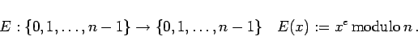
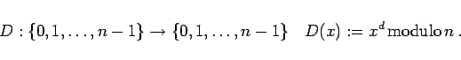
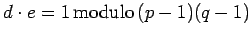

Inhalt Index DeskTop Bronstein

 Algebra und Diskrete Mathematik Kryptologie Verfahren mit öffentlichem Schlüssel
Algebra und Diskrete Mathematik Kryptologie Verfahren mit öffentlichem Schlüssel


Das RSA-Verfahren ist das populärste asymmetrische Verschlüsselungsverfahren.
|  | (5.299a) |
|  | (5.299b) |
Damit gilt D(E(m))=E(D(m))=m für jede Nachricht  .
.
Die zur Verschlüsselung verwendete Funktion ist für n=pq>10200 ein Kandidat für eine
Einwegfunktion mit Falltür. Die Zusatzinformation liegt hier in der Kenntnis der Primfaktorenzerlegung von  . Ohne diese Information ist es praktisch unmöglich, die Kongruenz
. Ohne diese Information ist es praktisch unmöglich, die Kongruenz
 zu lösen.
Das RSA-Verfahren gilt weithin als praktisch sicher, sofern die oben genannten Bedingungen erfüllt sind. Als Nachteil gegenüber anderen Verfahren sind die relativ große Schlüssellänge und die Tatsache zu beachten, daß RSA gegenüber DES um etwa den Faktor 1000 langsamer ist.